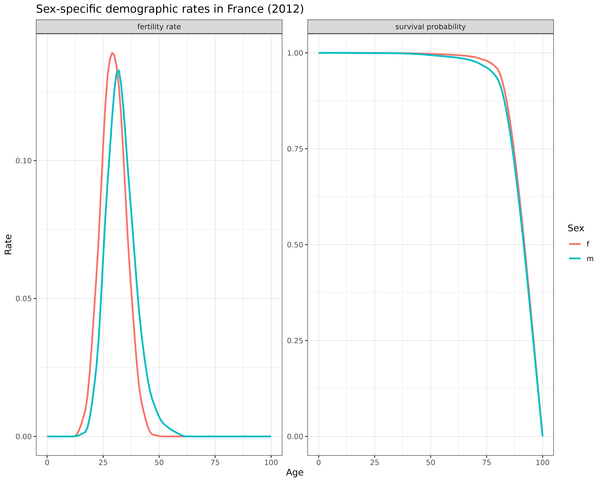
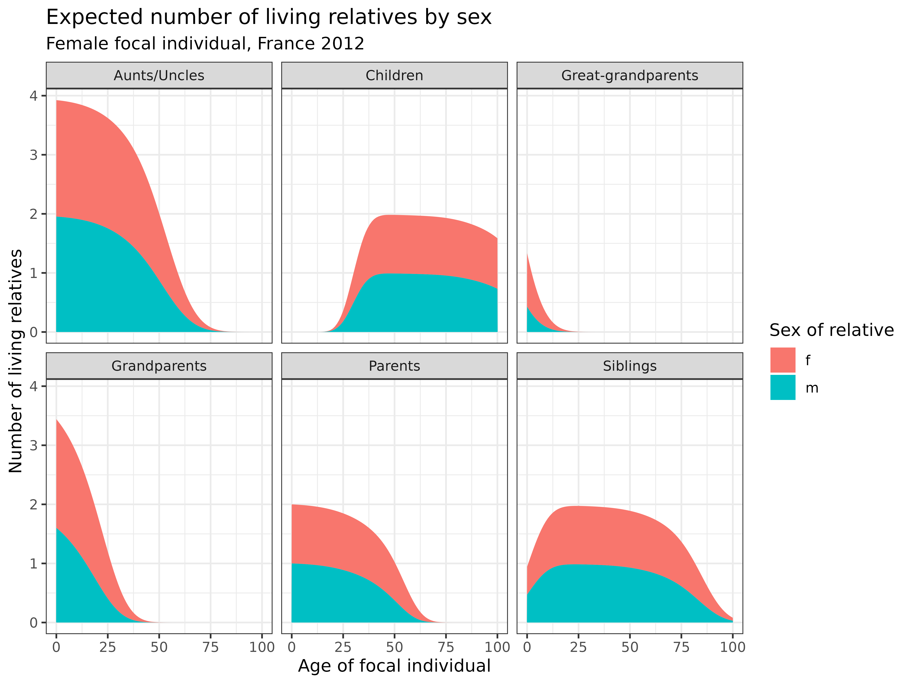
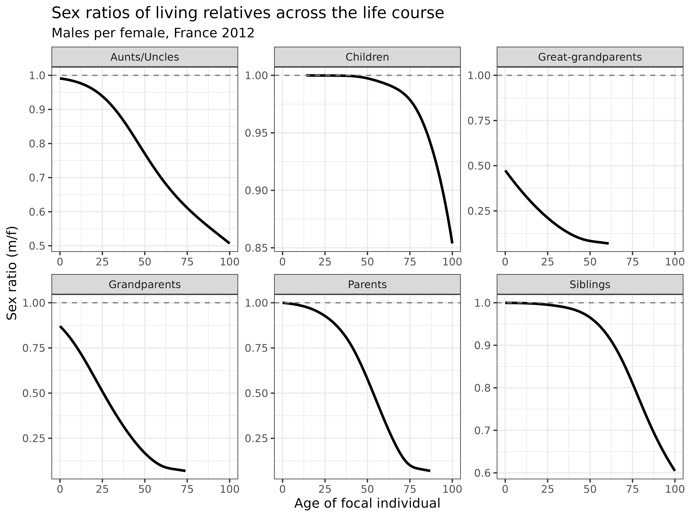
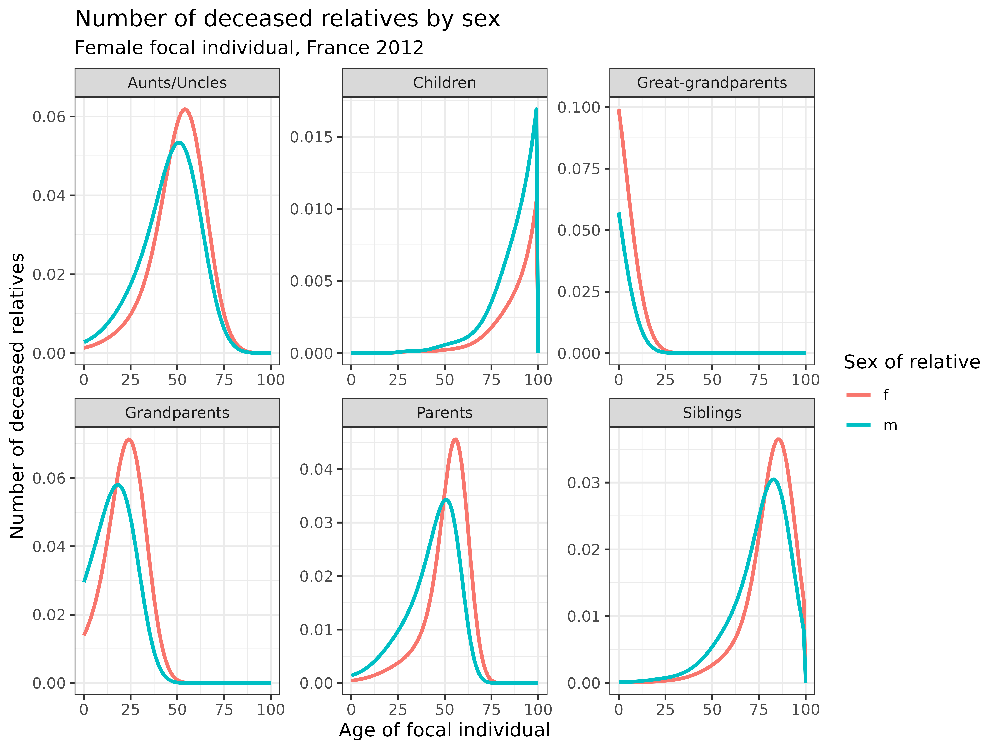

vignettes/1_3_TwoSex_TimeInvariant_Age.Rmd
1_3_TwoSex_TimeInvariant_Age.RmdLearning Objectives: In this vignette, you will learn how to extend the one-sex kinship model to incorporate both male and female demographic rates. You will understand the implementation of two-sex matrix models, explore how sex-specific mortality and fertility patterns affect kinship structures, and analyze differences in kin availability by sex.
Demographic processes fundamental to kinship formation vary significantly between males and females. While one-sex models offer valuable insights into family structures, they overlook these sex differences, which can lead to incomplete understanding of kinship dynamics. Two-sex kinship models address this limitation by incorporating sex-specific demographic rates and tracing both male and female lineages.
Key advantages of two-sex models include:
In this vignette, we will implement a two-sex time-invariant
kinship model, outlined in Caswell (2022), using the DemoKin package
to understand how sex-specific demographic patterns shape family
structures.
If you haven’t already installed the required packages from the previous vignettes, here’s what you’ll need:
# Install basic data analysis packages
install.packages("dplyr") # Data manipulation
install.packages("tidyr") # Data tidying
install.packages("ggplot2") # Data visualization
install.packages("knitr") # Document generation
# Install DemoKin
# DemoKin is available on CRAN (https://cran.r-project.org/web/packages/DemoKin/index.html),
# but we'll use the development version on GitHub (https://github.com/IvanWilli/DemoKin):
install.packages("remotes")
remotes::install_github("IvanWilli/DemoKin")
library(DemoKin) # For kinship analysisThe first step in implementing a two-sex kinship model is to understand the sex differences in demographic rates. Human males and females exhibit distinct mortality and fertility patterns:
These differences affect kinship structures in several important ways:
For our example, we’ll use data from France (2012), which is included
in the DemoKin package. Let’s examine the sex-specific
mortality and fertility rates:
# Extract sex-specific rates
fra_fert_f <- fra_asfr_sex[,"ff"] # Female fertility rates
fra_fert_m <- fra_asfr_sex[,"fm"] # Male fertility rates
fra_surv_f <- fra_surv_sex[,"pf"] # Female survival probabilities
fra_surv_m <- fra_surv_sex[,"pm"] # Male survival probabilities
# Compare total fertility rates by sex
cat("Difference in TFR (male - female):", sum(fra_fert_m) - sum(fra_fert_f))## Difference in TFR (male - female): -0.0115
# Visualize sex differences in demographic rates
data.frame(value = c(fra_fert_f, fra_fert_m, fra_surv_f, fra_surv_m),
age = rep(0:100, 4),
sex = rep(c(rep("f", 101), rep("m", 101)), 2),
risk = c(rep("fertility rate", 101 * 2), rep("survival probability", 101 * 2))) %>%
ggplot(aes(age, value, col=sex)) +
geom_line(linewidth = 1) +
labs(
title = "Sex-specific demographic rates in France (2012)",
x = "Age",
y = "Rate",
color = "Sex"
) +
facet_wrap(~ risk, scales = "free_y") +
theme_bw()
Interpretation: The graphs reveal important sex differences in demographic rates:
Fertility patterns: While total fertility rates are nearly identical between males and females (difference of only 0.01), the age patterns differ substantially. Male fertility occurs at later ages and has a wider distribution, reflecting the tendency for men to father children at older ages compared to women.
Survival probabilities: Females have higher survival probabilities at most of adult and old ages. This pattern leads to sex imbalances in older populations and affects the availability of different types of relatives.
These sex differences in demographic rates will shape kinship networks in ways that one-sex models cannot capture.
We now introduce the function kin2sex, which extends the
one-sex function kin to incorporate sex-specific rates. The
key differences are:
Let’s implement a two-sex time-varying model for France:
kin_result <- kin2sex(
pf = fra_surv_f, # Female survival probabilities
pm = fra_surv_m, # Male survival probabilities
ff = fra_fert_f, # Female fertility rates
fm = fra_fert_m, # Male fertility rates
time_invariant = TRUE, # Use time-invariant model
sex_focal = "f", # Focus on female focal individuals
birth_female = .5 # Proportion of births that are female
)The output of kin2sex is similar to that of
kin, with an additional column sex_kin that
specifies the sex of each relative.
Let’s examine how the number of living relatives differs by sex across the life course of a female focal individual:
# Group specific kin types and filter for key relationships
kin_out <- kin_result$kin_summary %>%
mutate(kin = case_when(kin %in% c("ys", "os") ~ "s", # Siblings
kin %in% c("ya", "oa") ~ "a", # Aunts/uncles
TRUE ~ kin)) %>%
filter(kin %in% c("d", "m", "gm", "ggm", "s", "a")) # Select key relationships
# Visualize living kin by sex
kin_out %>%
group_by(kin, age_focal, sex_kin) %>%
summarise(count = sum(count_living)) %>%
ggplot(aes(age_focal, count, fill = sex_kin)) +
geom_area() +
labs(
title = "Expected number of living relatives by sex",
subtitle = "Female focal individual, France 2012",
x = "Age of focal individual",
y = "Number of living relatives",
fill = "Sex of relative"
) +
theme_bw() +
facet_wrap(~kin, labeller = labeller(
kin = c("a" = "Aunts/Uncles", "d" = "Children",
"gm" = "Grandparents", "ggm" = "Great-grandparents",
"m" = "Parents", "s" = "Siblings")
))
Interpretation: These stacked area plots reveal how the sex composition of living relatives changes across the life course:
These patterns highlight the importance of accounting for sex differences in kinship models, especially when studying older populations.
When using the kin2sex function, it’s important to
understand how relationship codes work:
# Example of how to identify specific relatives by sex
kin_result$kin_summary %>%
filter(kin == "d", sex_kin == "m") %>% # This selects sons (male children)
head()## # A tibble: 6 × 11
## age_focal kin sex_kin year cohort count_living mean_age sd_age count_dead
## <int> <chr> <chr> <lgl> <lgl> <dbl> <dbl> <dbl> <dbl>
## 1 0 d m NA NA 0 NaN NaN 0
## 2 1 d m NA NA 0 NaN NaN 0
## 3 2 d m NA NA 0 NaN NaN 0
## 4 3 d m NA NA 0 NaN NaN 0
## 5 4 d m NA NA 0 NaN NaN 0
## 6 5 d m NA NA 0 NaN NaN 0
## # ℹ 2 more variables: count_cum_dead <dbl>, mean_age_lost <dbl>The function uses the same relationship codes as the one-sex model
(see demokin_codes()), but now each relative has a
specified sex. For example:
kin = "d", sex_kin = "f" refers to daughterskin = "d", sex_kin = "m" refers to sonskin = "m", sex_kin = "f" refers to motherskin = "m", sex_kin = "m" refers to fathersThis coding system allows for flexible analysis of specific relative types while maintaining compatibility with the one-sex model.
Sex ratios (males per female) are a traditional measure in demography that can provide insights into kinship structures. Let’s examine how sex ratios vary across different types of relatives:
# Calculate sex ratios (males per female) by kin type and age
kin_out %>%
group_by(kin, age_focal) %>%
summarise(sex_ratio = sum(count_living[sex_kin == "m"], na.rm = TRUE) /
sum(count_living[sex_kin == "f"], na.rm = TRUE)) %>%
ggplot(aes(age_focal, sex_ratio)) +
geom_line(linewidth = 1) +
geom_hline(yintercept = 1, linetype = "dashed", color = "gray50") +
labs(
title = "Sex ratios of living relatives across the life course",
subtitle = "Males per female, France 2012",
x = "Age of focal individual",
y = "Sex ratio (m/f)"
) +
theme_bw() +
facet_wrap(~kin, scales = "free", labeller = labeller(
kin = c("a" = "Aunts/Uncles", "d" = "Children",
"gm" = "Grandparents", "ggm" = "Great-grandparents",
"m" = "Parents", "s" = "Siblings")
))
Interpretation: The sex ratio plots reveal several important patterns:
These sex ratios have important implications for care relationships and support networks, particularly in older populations where female relatives predominate.
The experience of losing relatives differs by the sex of those relatives. Let’s examine how the timing of kin loss varies by sex:
# Visualize dead kin by sex
kin_out %>%
group_by(kin, sex_kin, age_focal) %>%
summarise(count = sum(count_dead)) %>%
ggplot(aes(age_focal, count, color = sex_kin)) +
geom_line(linewidth = 1) +
labs(
title = "Number of deceased relatives by sex",
subtitle = "Female focal individual, France 2012",
x = "Age of focal individual",
y = "Number of deceased relatives",
color = "Sex of relative"
) +
theme_bw() +
facet_wrap(~kin, scales = "free", labeller = labeller(
kin = c("a" = "Aunts/Uncles", "d" = "Children",
"gm" = "Grandparents", "ggm" = "Great-grandparents",
"m" = "Parents", "s" = "Siblings")
))
Interpretation: These curves show how the experience of losing relatives differs by sex:
Understanding these patterns is important for studying bereavement experiences and their impacts across the life course.
Two-sex kinship models have numerous applications in demographic and social research:
Gender and care: Women typically provide more informal care to relatives than men. Two-sex models can help quantify potential care burdens by examining the availability of different types of relatives by sex.
Kinship networks in aging societies: As populations age, the sex composition of available kin changes dramatically. Two-sex models allow us to project these changes and their implications for social support.
Intergenerational transfers: Resources often flow differently between male and female relatives. Two-sex models provide the demographic foundation for studying these gendered patterns.
Demographic transitions: Sex differences in mortality and fertility change during demographic transitions, reshaping kinship networks in ways that one-sex models cannot capture.
Demographic shocks: Events like wars often affect males and females differently, with long-lasting impacts on kinship structures. Two-sex models can capture these effects.
In this vignette, we’ve explored how to implement two-sex kinship
models using the DemoKin package. By incorporating
sex-specific mortality and fertility rates, these models reveal
important patterns that one-sex models cannot capture:
These insights have significant implications for understanding care relationships, intergenerational transfers, and support systems in aging societies. The two-sex approach substantially enhances our understanding of how gender shapes family structures across the life course, providing a more realistic foundation for both research and policy development.